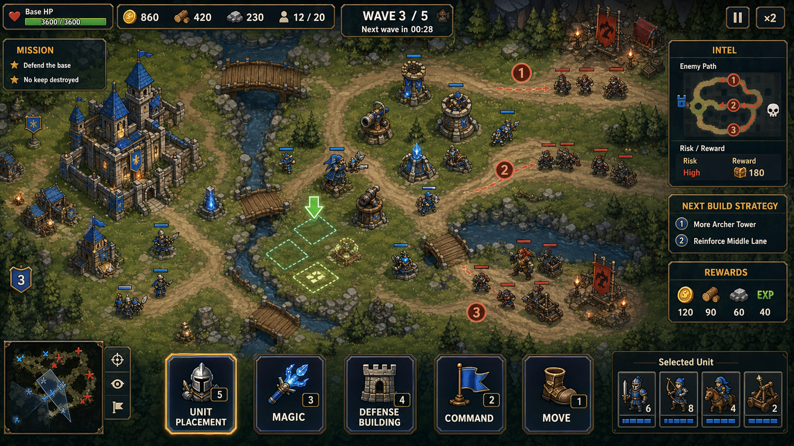

플레이 미리보기
플레이 미리보기

핵심 콘셉트
MadDragon은 공격과 방어가 번갈아 성장하는 모바일 RTS 캠페인이다. 플레이어는 적 요새를 공격해 자원을 벌고, 본부와 방어 시설을 강화하며, 자동 생산되는 자원을 수거하고, 침공 방어에 실패하면 자원을 약탈당한다.
핵심 루프
캠페인 허브 -> 공격 준비 -> 요새 공격 -> 보상 정산 -> 기지 정비 -> 침공 방어 또는 다음 공격
공격
정찰로 약점을 확인하고, 제한된 병력 슬롯과 장착 마법으로 적 요새를 뚫는 퍼즐이다.
방어
본부와 생산 자원을 지키는 경제 압박이다. 실패하면 미수거 자원과 보유 자원의 일부를 약탈당한다.
자원 생산과 약탈
대부분의 생산 건물은 시간이 지나며 자원을 만든다. 본부는 생산된 자원을 저장하고, 본부 레벨은 저장량과 보호율을 높인다.
미수거/저장 자원보유 자원본부 보호율예상 약탈량
방어 성공: 손실 없음, 방어 보상 획득 아슬아슬한 실패: 미수거 자원 30%, 보유 자원 5% 손실 완전 패배: 미수거 자원 70%, 보유 자원 15% 손실 본부 파괴: 미수거 자원 100%, 보유 자원 20% 손실
UI에는 항상 예상 약탈량과 보호율을 표시한다.
예상 약탈: 저장 골드 1,200 중 840 / 보유 골드 8,000 중 400 보호율: 35% 위험도: 높음
자원 역할
- 골드: 병력, 마법, 건물 배치, 수리 등 즉시 소비.
- 명예: 유닛 해금, 특수 건물 업그레이드, 패시브 성장.
- 별: 캠페인 진행도와 보상 해금 조건.
모바일 레이아웃 원칙
- 전장은 최대한 넓게 보여주고, UI는 필요한 순간에만 하단 시트로 연다.
- 상단 바는 시간, 목표 HP, 자원, 위험도처럼 핵심 상태만 표시한다.
- 하단 탭은 병력, 마법, 정보, 건설, 주둔, 강화처럼 화면별 작업 전환에 사용한다.
- 전투 퀵바는 선택 병력, 집결, 공격, 후퇴/대기, 장착 마법으로 압축한다.
- 한 화면에는 하나의 주요 행동만 크게 표시한다.
화면 구성
캠페인 허브
챕터, 골드, 명예, 별, 저장 자원, 침공 위험도를 표시하고 다음 공격 또는 기지 정비로 안내한다.
공격 준비
병력, 마법, 정보 탭으로 구성한다. 병력은 출전 슬롯, 마법은 2~3개 장착 중심이다.
요새 공격
상단 상태와 하단 퀵바만 유지하고, 라인 선택은 전장 터치로 해결한다.
기지 정비
저장 자원, 보유 자원, 저장 한도, 예상 약탈량을 보여주고 수거/건설/주둔/강화 탭을 제공한다.
침공 방어
본부 HP, 침공 타이머, 보호 자원을 표시하고 방어 결과에서 지킨 자원과 잃은 자원을 명확히 보여준다.
결과
승패, 별, 획득/약탈 자원, 해금을 보여주며 다음 행동은 기지 정비 또는 수리/보강으로 유도한다.
구현 상태
v0.6 구현 요약
MobileBattleHud의 하단 퀵바를 실제 버튼형 명령 슬롯으로 개선했다.- 퀵바는
Rally,Attack,Hold,Spells4개 명령으로 구성해 5개 이하 주요 선택지와 44px 이상 터치 타깃 원칙을 지킨다. - 전투 중 상단 상태는 남은 시간, 목표 HP, 획득 골드/명예만 압축 표시해 플레이 예시 화면의 상단 정보 구조에 더 가까워졌다.
TestBootstrap은 새 모바일 HUD 명령을 기존 병력 선택, 우선 공격 대상, 대기 명령, 마법 시전 준비 흐름에 연결한다.MobileBattleHudTests를 추가해 버튼 존재, 터치 크기, 명령 콜백, 압축 상태 텍스트를 EditMode 테스트로 검증했다.
v0.5 구현 요약
- 자원 생산 건물, 본부 저장, 모두 수거, 본부 보호율을 구현했다.
- 방어 실패 단계에 따라 미수거 자원과 보유 자원의 예상 약탈량을 계산한다.
- 캠페인 허브, 기지 정비, 공격 준비, 전투 HUD의 모바일 우선 프로토타입 화면을 추가했다.
- Clash-like 비주얼 방향을 위해 카메라, 조명, 진영 색상, 지형/석재/골드 팔레트를 공통 스타일로 분리했다.
v0.5 Task 1 - 자원 생산/저장 로직
ResourceWallet로 골드, 명예, 별 같은 자원을 보관하고 추가/소비/제거/복사할 수 있게 했다.ResourceProductionBuilding으로 생산 건물의 초당 생산량과 개별 저장 한도를 표현한다.ResourceStorageSystem으로 본부 레벨, 저장 자원, 생산 누적, 모두 수거, 본부 저장 한도, 보호율을 계산한다.- 같은 자원을 생산하는 건물이 여러 개 있을 때 자원별 총 생산 한도와 본부 저장 한도를 함께 적용한다.
- EditMode 테스트에 생산 누적, 생산 건물 한도, 다중 생산 건물 총량, 본부 저장 한도, 모두 수거, 보호율 상한, 본부 레벨 최소값, null 생산 건물 방어 케이스를 추가했다.
v0.5 Task 2 - 약탈 손실 계산
RaidLossCalculator로 방어 결과별 예상 약탈 손실과 실제 자원 차감을 계산한다.- 보호율은 0%~75% 범위로 보정하고, 예측 결과에도 보정된 보호율을 표시한다.
- 골드, 명예, 별 모두에 저장 자원 손실과 보유 자원 손실을 동일한 규칙으로 적용한다.
v0.5 Task 3 - 세이브 데이터 통합
SaveData에 보유 자원, 저장 자원, 본부 레벨, 마지막 수거 시각을 저장하는 경제 상태 필드를 추가했다.SaveSystem.Load는 오래된 세이브의 null 딕셔너리/지갑과 지갑 내부 수량 딕셔너리를 기본값으로 보정하고, 본부 레벨이 0 이하이면 1로 복구한다.- EditMode 테스트에 저장 후 불러오기에서 보유/저장 골드, 명예, 별, 본부 레벨, 마지막 수거 시각이 유지되고 오래된 경제 필드가 기본값으로 보정되는 케이스를 추가했다.
v0.5 Task 4 - 모바일 UI 기반
MobileHudTheme에 모바일 HUD 패널, 강조 패널, 골드/명예/위험/긍정 색상, 주요/보조 버튼 색상, 폰트 크기, 하단 시트 높이, 주요 버튼 크기 상수를 추가했다.MobileUiFactory로 UGUI 패널, 라벨, 버튼 생성과RectTransform배치를 재사용할 수 있게 분리했다.
v0.5 Task 5 - 캠페인 허브/기지 정비 프로토타입
CampaignHubScreen으로 보유 자원, 저장 자원, 예상 약탈 손실을 첫 화면에서 확인하고Play로 즉시 전투를 시작하거나Prep/Base로 준비와 기지 정비를 선택할 수 있게 했다.BaseManagementScreen으로 본부 레벨, 저장 한도, 저장 골드, 예상 손실을 표시하고Collect버튼으로 미수거 자원을 보유 자원으로 옮길 수 있게 했다.TestBootstrap에 자원 생산 틱, 현재 약탈 예측, 허브의 즉시 전투 시작, 기지/기존 공격 준비 화면 전환을 연결해 자동 생산 자원을 자주 챙기는 루프를 프로토타입 화면에 반영했다.- 기존 공격 준비 화면에서도
Hub/Base버튼으로 돌아갈 수 있어, 병력 구매 전후에 저장 자원 수거와 약탈 위험 확인을 다시 할 수 있다.
v0.5 Task 6 - 공격 준비 화면
AttackPrepScreen으로 편성 병력, 마법 슬롯, 정찰 정보를 한 화면에 요약해 출전 직전 확인 흐름을 추가했다.Army버튼은 기존 병력/마법 구매 화면으로 이어지고,Start는 기존 전투 진입 로직을 호출해 현재 프로토타입 전투 흐름을 유지한다.- 공격 준비 화면에서도
Hub와Base로 돌아갈 수 있어, 출전 직전에 저장 자원 수거와 약탈 위험 확인을 반복할 수 있다. - 테스트 편의를 위해 공격 병력이 비어 있을 때 허브의
Play또는 공격 준비 화면의Start를 누르면 기본 기사 3명을 자동 편성하고 전투를 시작한다.
v0.5 Task 7 - 모바일 전투 HUD
MobileBattleHud를 추가해 전투 중 남은 시간, 목표 HP, 획득 골드/명예를 상단에 압축 표시한다.- 하단 퀵바는 집결, 공격, 대기, 마법 같은 모바일 전투 명령 위치를 먼저 잡아두는 프로토타입 UI로 연결했다.
- 기존 전투 HUD는 아직 유지해 입력 기능을 보존하고, 새 HUD는 다음 단계에서 점진적으로 주 HUD가 되도록 병행 표시한다.
v0.5 Task 8 - 모바일 비주얼 스타일 기반
MobileVisualStyle로 카메라, 조명, 하늘색, 잔디, 진영 색상, 석재, 골드 포인트 색상을 한곳에서 관리한다.- 프로토타입 월드의 카메라 시야각과 조명을 모바일에서 읽기 쉬운 밝고 장난감 같은 톤으로 조정했다.
- 적 건물, 플레이어 건물, 성벽, 게이트, 지면 색상을 공통 팔레트로 연결해 이후 Clash-like 퀄리티 업그레이드의 기준점을 만들었다.
- 밝은 레퍼런스 이미지 방향에 맞춰 잔디/길/돌/목재/횃불 팔레트를 보강하고, 성/타워/마법탑/자원 건물에 지붕, 금색 트림, 문, 배너, 광원 장식을 추가했다.
- 전장 가장자리에 나무와 바위 클러스터를 배치하고 중앙 경로를 추가해 평면 primitive 전장이 모바일 전략 게임처럼 읽히도록 밀도를 높였다.
- 생성 이미지 리소스를
Resources/MadDragonArt로 분할 배치하고, 월드 건물 파사드와 병력/마법 구매 버튼 썸네일에 실제로 연결했다. - Asset Store의
Natural Environment (Mobile)방향을 검토했으며, 에셋스토어 인증 다운로드 전까지 프로젝트 내SimpleNaturePack/절차적 장식으로 숲 가장자리, 풀밭, 바위, 꽃, 물길, 배경 능선을 전장에 적용했다. - 배경 장식은 충돌체를 제거한 비전투 오브젝트로 구성해 유닛 이동, 공격 판정, 플레이 버튼 전투 진입 안정성에 영향을 주지 않도록 했다.
- 포터블 실행 시 구형
01_MainMenu의 미연결 버튼으로 시작하던 문제를 수정해, 빌드 첫 씬을 최신 캠페인 허브/전투 루프가 붙은05_TestBattle로 변경했다. GameManager의 씬 전환명도 실제 빌드 씬 파일명(01_MainMenu,02_BaseBuilder,05_TestBattle,04_Result)에 맞춰 수정했다.ToonyTinyPeople/TT_RTS/TT_RTS_Standard에셋을 런타임 매니페스트로 묶고, 유닛/공성기/주요 건물/성벽/배너 장식에 Toony RTS 실제 모델 비주얼 레이어를 적용했다.- Toony 비주얼은 기존 HP, AI, 콜라이더 루트의 자식으로만 붙이고 자체 콜라이더와 Rigidbody를 제거해 전투 안정성을 유지한다.
- 건물은 Toony FBX/프리팹 모델을 우선 사용하고, 모델 로드에 실패한 경우에만 생성 이미지 파사드를 fallback으로 만든다.
- Toony 건물 모델은 각 건물의 게임플레이 바닥 크기에 맞춰 렌더러 bounds를 기준으로 자동 스케일링하고, 모델 하단을 지면에 정렬한다.
- 공격 모드 시야 시스템은 기존 적 은폐 로직 위에 어두운 반투명 FOW 비주얼 레이어를 추가해, 미탐색 지역은 짙은 안개로 가리고 탐색 완료/현재 시야 밖 지역은 옅은 안개로 남긴다.
구현 방향
1차 구현은 현재 프로토타입 기능을 살리되 모바일 UI 구조로 재배치한다. 이후 자원 저장/약탈 계산과 UI 화면 생성은 별도 클래스로 분리한다.
CampaignHubScreenAttackPrepScreenBattleHudBaseManagementScreenDefenseSetupHudResultScreenResourceStorageSystemRaidLossCalculator
검증
- 자원 생산 누적, 모두 수거, 본부 저장 한도, 약탈 손실 계산, 보호율 보정은 EditMode 테스트로 검증한다.
- 모바일 비율, 터치 영역, 텍스트 겹침, 하단 시트와 전장 가시성은 Unity 실행 화면으로 검증한다.